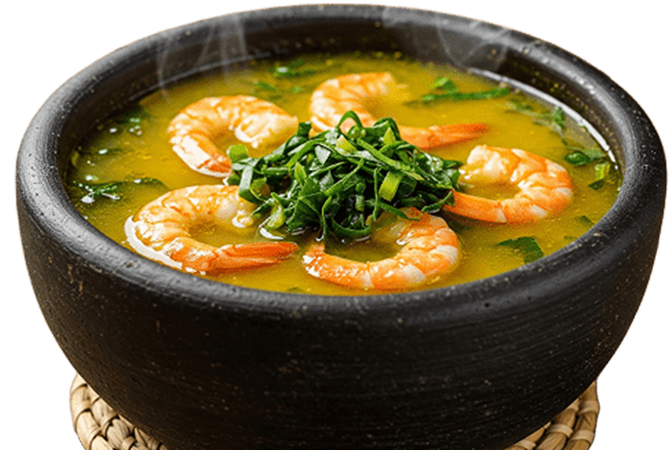

Tacacá
Ingredientes
- 1 litro de tucupi
- 2 dentes de alho amassados
- 2 pimentas-de-cheiro
- 1 maço pequeno de jambu
- 200 g de camarão seco
- 2 colheres de sopa de goma de tapioca
- Sal a gosto
- Pimenta (opcional)
Modo de Preparo
- Prepare o tucupi:
- Cozinhe o jambu:
- Prepare a goma:
- Monte o tacacá:
- Sirva quente:
Coloque o tucupi em uma panela, adicione o alho, a pimenta-de-cheiro e um pouco de sal. Deixe ferver por cerca de 30 minutos para apurar o sabor.
Lave bem o jambu e cozinhe em água com um pouco de sal por aproximadamente 10 minutos. Escorra e reserve.
Dissolva a goma de tapioca em um pouco de água e leve ao fogo, mexendo até formar um creme levemente espesso.
Em uma cuia ou tigela, coloque um pouco da goma de tapioca, acrescente o tucupi bem quente, adicione o jambu e finalize com os camarões secos por cima.
O tacacá é tradicionalmente servido bem quente, podendo ser acompanhado de pimenta a gosto.
Historia e importância cultural
O Tacacá é um prato típico da região Norte do Brasil, especialmente do Pará. Sua origem vem da culinária indígena amazônica, que utilizava ingredientes locais como mandioca, tucupi e jambu na preparação de seus alimentos. Com o tempo, o prato passou a fazer parte da cultura regional e se tornou muito popular nas cidades da Amazônia. Tradicionalmente, o tacacá é vendido nas ruas por tacacazeiras e servido em cuias. Além de ser muito consumido no final da tarde, ele é considerado um símbolo importante da gastronomia e da cultura amazônica.